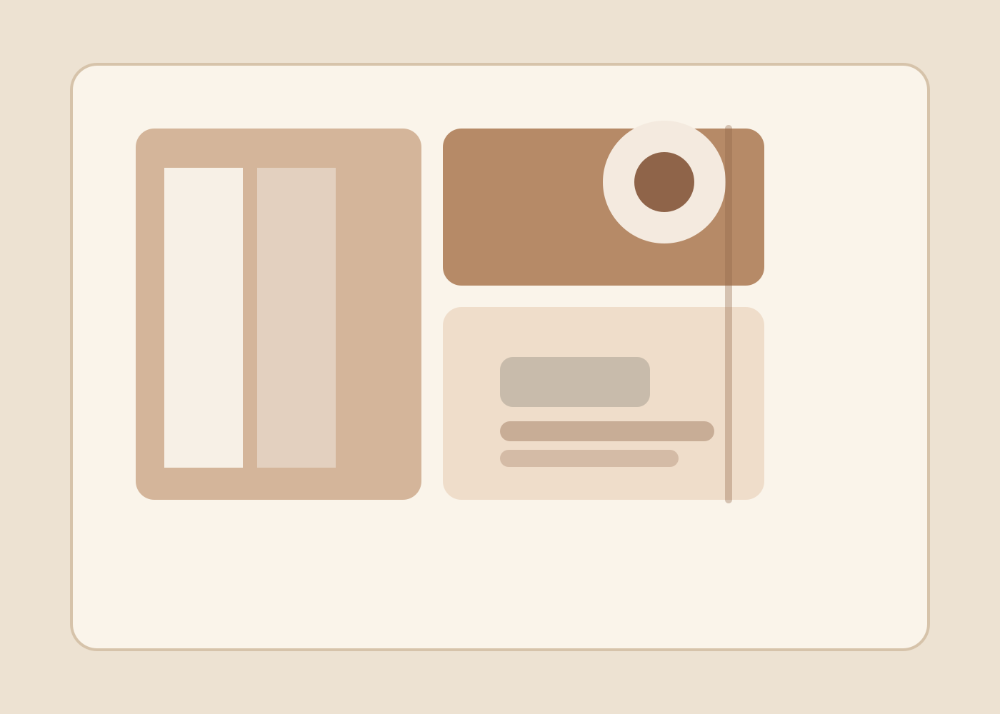
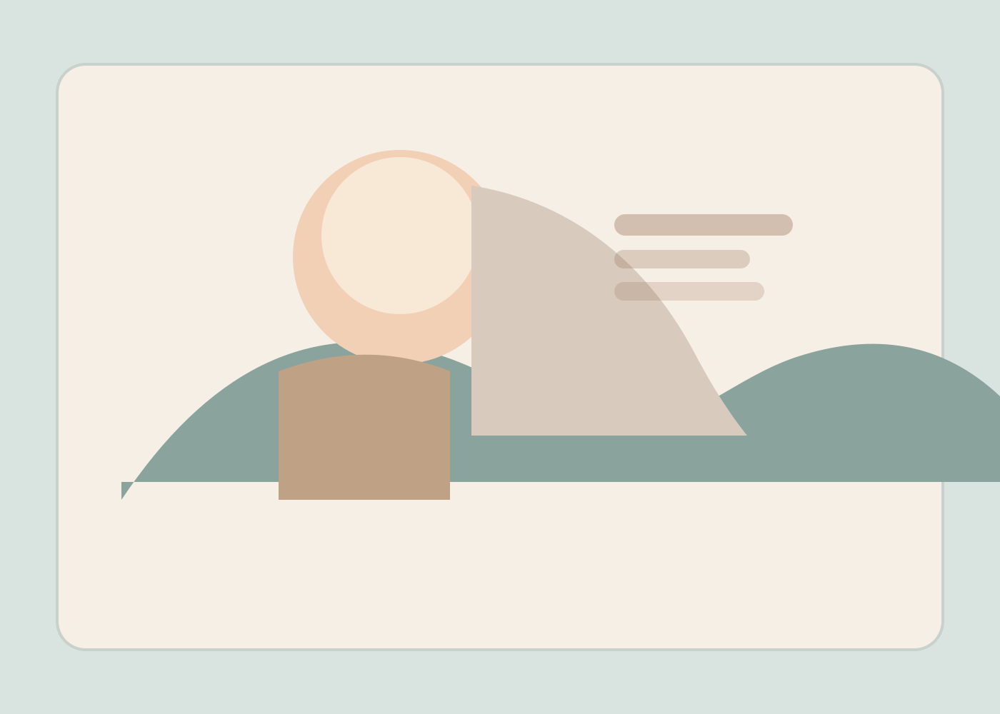
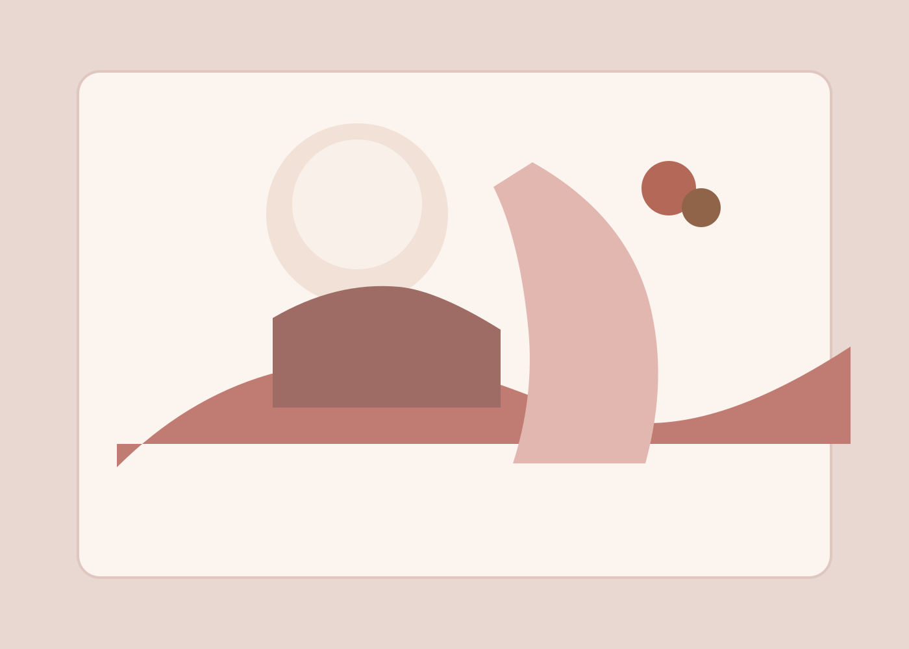

Website launch
Northstar Launch Site
A conversion-focused company site with a structured homepage, service depth, and a clear path to inquiry.
Northstar Web Works
We design and build local-first websites with responsive layouts, practical automation, and a calm delivery workflow so each release feels deliberate and client-ready.
Featured work
Each project below was shaped to fit the client’s goals while still carrying a clear Northstar point of view.

Website launch
A conversion-focused company site with a structured homepage, service depth, and a clear path to inquiry.

Client portal
A service dashboard concept focused on support requests, maintenance plans, and reporting clarity.

Conversion redesign
A cleaner analytics-led marketing site with stronger hierarchy, better scanning, and more persuasive calls to action.
Services
Packages are designed to be clear, collaborative, and useful whether you need a clean build, a redesign, or steady support after launch.
From $1,200
Project scoping, information architecture, content priorities, and a practical roadmap for the build.
From $4,800
Classic theme development, local assets, responsive templates, and a production-ready front end.
Custom quote
Regular updates, content tweaks, performance checks, and a steady support lane after launch.
From $950
Reusable page sections, launch checklists, and content patterns that keep future edits efficient.
Process
We align on goals, audience, site structure, and the practical constraints that shape the work.
We create the theme, content system, and responsive layout with accessible defaults and local assets.
We package, validate, and hand off a site that is ready for WordPress installation and ongoing updates.
Working principles
We prioritize hierarchy, copy flow, and a layout that helps visitors understand the business quickly.
We keep the workflow measurable, versioned, and easy to validate before a release goes live.
We use local assets, reusable sections, and direct implementation choices that are easy to maintain.
Testimonials
Northstar delivered a site that feels composed, fast, and immediately trustworthy. The handoff was unusually clear.
The new homepage finally explains what we do without sounding generic. It reads like a real company, not a template.
Our maintenance backlog is now organized, visible, and easier to manage. The workflow feels durable, not improvised.
Journal
When no posts are published yet, the section still reads like a finished editorial preview rather than an empty state.
June 2026 · Project notes
Read the Northstar journal for guidance on planning, content structure, and launch preparation.
May 2026 · Launch planning
Read the Northstar journal for guidance on planning, content structure, and launch preparation.
April 2026 · Design systems
Read the Northstar journal for guidance on planning, content structure, and launch preparation.